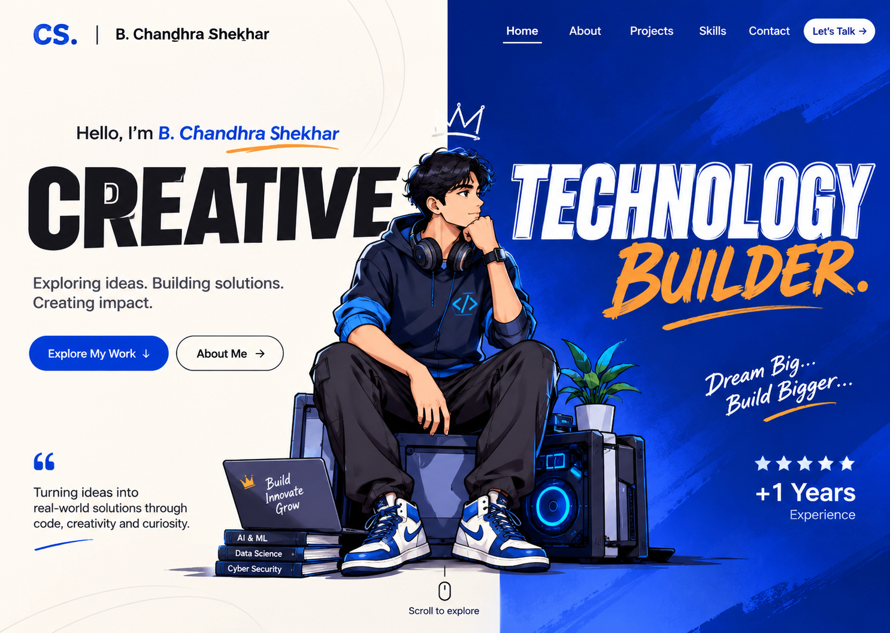

Artificial Intelligence
Exploring how intelligent systems can support better ideas and experiences.

B. Chandhra Shekhar
Exploring ideas. Building solutions. Creating impact.
Turning ideas into real-world solutions through code, creativity and curiosity.
Let’s talkHello, I’m
B. Chandhra Shekhar
I'm a technology enthusiast exploring AI, innovation and creative problem-solving.
↓ Scroll to know meA practice in progress
My path is guided by a simple instinct: understand how things work, then imagine how they could work better.
I explore ideas at the intersection of technology and creativity, approaching every new problem as an opportunity to learn, experiment, and make something meaningful.
What drives me
I'm motivated by thoughtful questions, useful ideas, and the possibility of turning complexity into clear, human solutions.
Exploring how intelligent systems can support better ideas and experiences.
Using technology as a practical tool for expression, invention, and impact.
Breaking complex questions into focused, approachable steps.
Looking beyond familiar answers to find thoughtful new possibilities.
Personal timeline
A growing interest in understanding technology and the ideas behind it.
Learning across AI, innovation, and creative problem-solving.
To keep building thoughtful solutions that create meaningful impact.
Education
Education details are intentionally left open here, ready for your degree, institution, and study period when you choose to add them.
I want to keep exploring boldly, building thoughtfully, and creating work that makes a positive difference.
— B. Chandhra Shekhar
Creative technology builder
Ideas transformed into experiments, applications and solutions.
Select an application to explore
04 Experience
Every experience is another opportunity to experiment, learn and grow.
Explore the journeySelected experience
Scroll to follow the line
A learning experience focused on data analytics with AI, connected to the SuperMarketDataAnalytics project.
Open experienceRelated project
SuperMarketDataAnalyticsView details →Hands-on IoT and embedded systems learning through the Smart EV Charging Station Optimizer project.
Open experienceRelated project
Smart EV Charging Station OptimizerView details →Sustainability-focused learning connected to the CampusEnergy Twin project.
Open experienceRelated project
CampusEnergy TwinView details →An AI/ML internship focused on learning and applying foundational artificial intelligence and machine learning workflows.
Explore projectsStill learning. Still building.
05 / Skills
The technologies and abilities I’m actively exploring and using. Select any skill on the globe — or in the index below — to see what it means in my practice. Honestly described. No percentages.
Full index
06 / My thinking
I don’t follow a strict method — I follow a loop. Watch an idea travel through it below, then select any stage to see what happens there.
Stage
This loop runs through everything I build — including this portfolio.
07 / Voice & creativity
Powered by Wispr FlowMost of my ideas begin as speech. With Wispr Flow, spoken thoughts become clear written text — and that text becomes AI prompts, UI descriptions, requirements and projects. This page maps the workflow.
I talk through an idea the way I’d explain it to a friend — out loud, unfiltered, in flow.
Wispr Flow turns spoken words into clear written text — capturing the idea as I meant it, not as a rigid transcript.
That text becomes the raw material: AI prompts, UI design descriptions, project outlines and requirements.
The words go straight to work — code, dashboards, devices and pages like this one take shape.
Voice-first, always
Workflow in pictures
This space is reserved for actual screenshots of my Wispr Flow workflow — dropped in as they are captured.
An honest note: there is no microphone running on this page. Wispr Flow lives between my ideas and my keyboard — this page simply describes how I use it.
08 / Contact
The best projects start as conversations. If something here sparked an idea — or you’re building something and think we should talk — find me on LinkedIn, and explore everything I’m building on GitHub.
LinkedIn is the fastest way to reach me. I’ve intentionally left email and phone off this page.